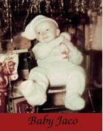

| 
|

|

|

|
Home |
Bass
Jaco played a 1962 Fender Jazz Bass which was fretless; it was fretless because he had pulled out all the frets and filled the grooves in with marine epoxy.
Strings
An important part of Jaco’s sound was his use of roundwound strings. He used Rotosound Roundwound bass strings.
Lubricant
Jaco was legendary for coating his fingers with fried chicken grease before going on stage, in order to lubricate his playing. However, some of Jaco's friends have disputed this legend, saying it is just a myth.
Amp
Acoustic model 360 X 2 with built-in fuzz
Effects
MXR F/x-113 Digital Delay (used in "Slang"), Boss Octave Divider.